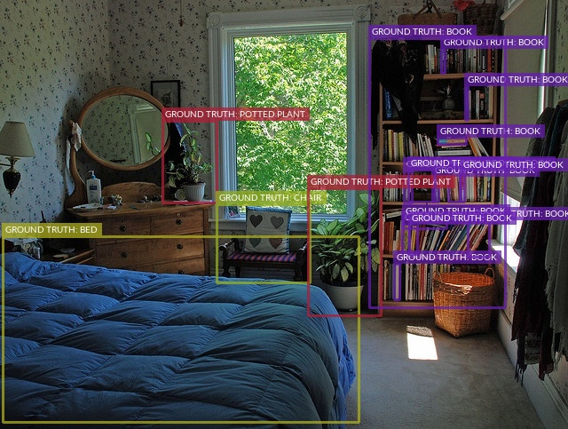

Drawing Labels on Samples ¶¶
This recipe demonstrates how to use FiftyOne to render annotated versions of image and video samples with their label field(s) overlaid.
Setup ¶¶
If you haven’t already, install FiftyOne:
[ ]:
!pip install fiftyone
In this recipe we’ll use the FiftyOne Dataset Zoo to download some labeled datasets to use as sample data for drawing labels.
Behind the scenes, FiftyOne uses either the TensorFlow Datasets or TorchVision Datasets libraries to wrangle the datasets, depending on which ML library you have installed.
You can, for example, install PyTorch as follows (we’ll also need pycocotools to load the COCO dataset, in particular):
[1]:
!pip install torch torchvision
!pip install pycocotools
Drawing COCO detections ¶¶
You can download the validation split of the COCO-2017 dataset to ~/fiftyone/coco-2017/validation by running the following command:
[1]:
!fiftyone zoo datasets download coco-2017 --splits validation
Split 'validation' already downloaded
Now let’s load the dataset, extract a DatasetView that contains 100 images from the dataset, and render them as annotated images with their ground truth labels overlaid:
[2]:
import fiftyone as fo
import fiftyone.zoo as foz
import fiftyone.utils.annotations as foua
# Directory to write the output annotations
anno_dir = "/tmp/fiftyone/draw_labels/coco-2017-validation-anno"
# Load the validation split of the COCO-2017 dataset
dataset = foz.load_zoo_dataset("coco-2017", split="validation")
# Extract some samples
view = dataset.limit(100)
#
# You can customize the look-and-feel of the annotations
# For more information, see:
# https://voxel51.com/docs/fiftyone/user_guide/draw_labels.html#customizing-label-rendering
#
config = foua.DrawConfig({
"per_object_label_colors": True
})
# Render the labels
print("Writing annotated images to '%s'" % anno_dir)
view.draw_labels(anno_dir, config=config)
print("Annotation complete")
Split 'validation' already downloaded
Loading 'coco-2017' split 'validation'
100% |█████| 5000/5000 [14.8s elapsed, 0s remaining, 339.4 samples/s]
Writing annotated images to '/tmp/fiftyone/draw_labels/coco-2017-validation-anno'
100% |███████| 100/100 [7.3s elapsed, 0s remaining, 11.9 samples/s]
Annotation complete
Let’s list the output directory to verify that the annotations have been generated:
[3]:
!ls -lah /tmp/fiftyone/draw_labels/coco-2017-validation-anno | head
total 51976
drwxr-xr-x 202 Brian wheel 6.3K Jul 27 18:36 .
drwxr-xr-x 5 Brian wheel 160B Jul 27 15:59 ..
-rw-r--r-- 1 Brian wheel 115K Jul 27 18:36 000001-2.jpg
-rw-r--r--@ 1 Brian wheel 116K Jul 27 12:51 000001.jpg
-rw-r--r-- 1 Brian wheel 243K Jul 27 18:36 000002-2.jpg
-rw-r--r-- 1 Brian wheel 243K Jul 27 12:51 000002.jpg
-rw-r--r-- 1 Brian wheel 177K Jul 27 18:36 000003-2.jpg
-rw-r--r--@ 1 Brian wheel 177K Jul 27 12:51 000003.jpg
-rw-r--r-- 1 Brian wheel 101K Jul 27 18:36 000004-2.jpg
Here’s an example of an annotated image that was generated:

Drawing Caltech 101 classifications ¶¶
You can download the test split of the Caltech 101 dataset to ~/fiftyone/caltech101/test by running the following command:
[4]:
!fiftyone zoo datasets download caltech101 --splits test
Split 'test' already downloaded
Now let’s load the dataset, extract a DatasetView that contains 100 images from the dataset, and render them as annotated images with their ground truth labels overlaid:
[5]:
import fiftyone as fo
import fiftyone.zoo as foz
import fiftyone.utils.annotations as foua
# Directory to write the output annotations
anno_dir = "/tmp/fiftyone/draw_labels/caltech101-test-anno"
# Load the test split of the Caltech 101 dataset
dataset = foz.load_zoo_dataset("caltech101", split="test")
# Extract some samples
view = dataset.limit(100)
#
# You can customize the look-and-feel of the annotations
# For more information, see:
# https://voxel51.com/docs/fiftyone/user_guide/draw_labels.html#customizing-label-rendering
#
config = foua.DrawConfig({
"font_size": 36
})
# Render the labels
print("Writing annotated images to '%s'" % anno_dir)
view.draw_labels(anno_dir, config=config)
print("Annotation complete")
Split 'test' already downloaded
Loading 'caltech101' split 'test'
100% |█████| 9145/9145 [4.8s elapsed, 0s remaining, 1.9K samples/s]
Writing annotated images to '/tmp/fiftyone/draw_labels/caltech101-test-anno'
100% |███████| 100/100 [2.6s elapsed, 0s remaining, 37.4 samples/s]
Annotation complete
Let’s list the output directory to verify that the annotations have been generated:
[6]:
!ls -lah /tmp/fiftyone/draw_labels/caltech101-test-anno | head
total 17456
drwxr-xr-x 182 Brian wheel 5.7K Jul 27 18:37 .
drwxr-xr-x 5 Brian wheel 160B Jul 27 15:59 ..
-rw-r--r--@ 1 Brian wheel 13K Jul 27 18:37 image_0001-2.jpg
-rw-r--r-- 1 Brian wheel 41K Jul 27 15:59 image_0001.jpg
-rw-r--r-- 1 Brian wheel 197K Jul 27 18:37 image_0002.jpg
-rw-r--r-- 1 Brian wheel 5.9K Jul 27 18:37 image_0003.jpg
-rw-r--r-- 1 Brian wheel 19K Jul 27 18:37 image_0004-2.jpg
-rw-r--r-- 1 Brian wheel 33K Jul 27 15:59 image_0004.jpg
-rw-r--r-- 1 Brian wheel 18K Jul 27 18:37 image_0005-2.jpg
Here’s an example of an annotated image that was generated:
Drawing labels on videos ¶¶
FiftyOne can also render frame labels onto video samples.
To demonstrate, let’s work with the (small) video quickstart dataset from the zoo:
[2]:
import fiftyone.zoo as foz
# Load a small video dataset
dataset = foz.load_zoo_dataset("quickstart-video")
print(dataset)
Dataset already downloaded
Loading 'quickstart-video'
100% |█████████| 10/10 [15.9s elapsed, 0s remaining, 0.6 samples/s]
Name: quickstart-video
Media type video
Num samples: 10
Persistent: False
Info: {'description': 'quickstart-video'}
Tags: []
Sample fields:
media_type: fiftyone.core.fields.StringField
filepath: fiftyone.core.fields.StringField
tags: fiftyone.core.fields.ListField(fiftyone.core.fields.StringField)
metadata: fiftyone.core.fields.EmbeddedDocumentField(fiftyone.core.metadata.Metadata)
frames: fiftyone.core.fields.FramesField
Frame fields:
frame_number: fiftyone.core.fields.FrameNumberField
objs: fiftyone.core.fields.EmbeddedDocumentField(fiftyone.core.labels.Detections)
Note that the dataset contains frame-level detections in the objs field of each frame.
Let’s make a DatasetView that contains a couple random videos from the dataset and render them as annotated videos with the frame-level detections overlaid:
[3]:
import fiftyone.utils.annotations as foua
# Directory to write the output annotations
anno_dir = "/tmp/fiftyone/draw_labels/quickstart-video-anno"
# Extract two random samples
view = dataset.take(2)
#
# You can customize the look-and-feel of the annotations
# For more information, see:
# https://voxel51.com/docs/fiftyone/user_guide/draw_labels.html#customizing-label-rendering
#
config = foua.DrawConfig({
"per_object_label_colors": True
})
# Render the labels
print("Writing annotated videos to '%s'" % anno_dir)
view.draw_labels(anno_dir, config=config)
print("Annotation complete")
Writing annotated videos to '/tmp/fiftyone/draw_labels/quickstart-video-anno'
Rendering video 1/2: '/tmp/fiftyone/draw_labels/quickstart-video-anno/0587e1cfc2344523922652d8b227fba4-000014-video_052.mp4'
100% |████████| 120/120 [19.0s elapsed, 0s remaining, 6.7 frames/s]
Rendering video 2/2: '/tmp/fiftyone/draw_labels/quickstart-video-anno/0587e1cfc2344523922652d8b227fba4-000014-video_164.mp4'
100% |████████| 120/120 [27.2s elapsed, 0s remaining, 4.3 frames/s]
Annotation complete
Let’s list the output directory to verify that the annotations have been generated:
[4]:
!ls -lah /tmp/fiftyone/draw_labels/quickstart-video-anno
total 34832
drwxr-xr-x 4 Brian wheel 128B Oct 7 23:57 .
drwxr-xr-x 3 Brian wheel 96B Oct 7 23:57 ..
-rw-r--r-- 1 Brian wheel 7.5M Oct 7 23:57 0587e1cfc2344523922652d8b227fba4-000014-video_052.mp4
-rw-r--r-- 1 Brian wheel 8.5M Oct 7 23:58 0587e1cfc2344523922652d8b227fba4-000014-video_164.mp4
Here’s a snippet of an annotated video that was generated:

Cleanup ¶¶
You can cleanup the files generated by this recipe by running the command below:
[7]:
!rm -rf /tmp/fiftyone